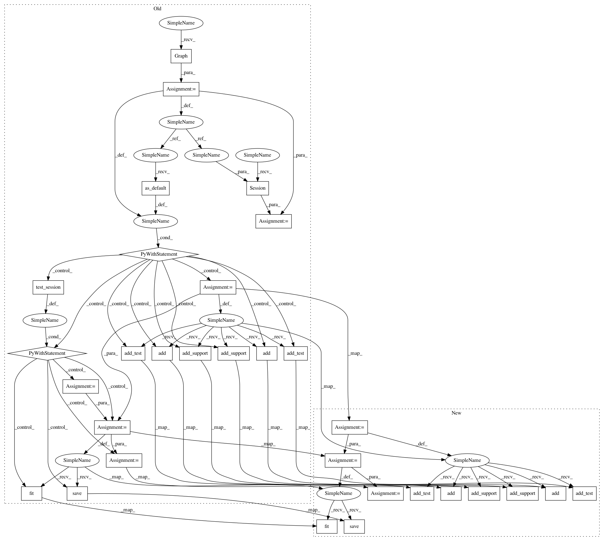

343cb214a384df7061e0e4300bc376ae4f66b5ef,deepchem/models/tests/test_overfit.py,TestOverfit,test_siamese_singletask_classification_overfit,#TestOverfit#,594
Before Change
Test siamese singletask model overfits tiny data.
np.random.seed(123)
tf.set_random_seed(123)
g = tf.Graph()
sess = tf.Session(graph=g)
n_tasks = 1
n_feat = 75
max_depth = 4
n_pos = 6
n_neg = 4
test_batch_size = 10
n_train_trials = 80
support_batch_size = n_pos + n_neg
// Load mini log-solubility dataset.
featurizer = dc.feat.ConvMolFeaturizer()
tasks = ["outcome"]
input_file = os.path.join(self.current_dir, "example_classification.csv")
loader = dc.data.CSVLoader(
tasks=tasks, smiles_field="smiles", featurizer=featurizer)
dataset = loader.featurize(input_file)
classification_metric = dc.metrics.Metric(dc.metrics.accuracy_score)
with g.as_default():
support_model = dc.nn.SequentialSupportGraph(n_feat)
// Add layers
// output will be (n_atoms, 64)
support_model.add(dc.nn.GraphConv(64, activation="relu"))
// Need to add batch-norm separately to test/support due to differing
// shapes.
// output will be (n_atoms, 64)
support_model.add_test(dc.nn.BatchNormalization(epsilon=1e-5, mode=1))
// output will be (n_atoms, 64)
support_model.add_support(dc.nn.BatchNormalization(epsilon=1e-5, mode=1))
support_model.add(dc.nn.GraphPool())
support_model.add_test(dc.nn.GraphGather(test_batch_size))
support_model.add_support(dc.nn.GraphGather(support_batch_size))
with self.test_session() as sess:
model = dc.models.SupportGraphClassifier(
sess, support_model, test_batch_size=test_batch_size,
support_batch_size=support_batch_size, learning_rate=1e-3)
// Fit trained model. Dataset has 6 positives and 4 negatives, so set
// n_pos/n_neg accordingly.
model.fit(dataset, n_episodes_per_epoch=n_train_trials, n_pos=n_pos,
n_neg=n_neg)
model.save()
// Eval model on train. Dataset has 6 positives and 4 negatives, so set
// n_pos/n_neg accordingly. Note that support is *not* excluded (so we
// can measure model has memorized support). Replacement is turned off to
// ensure that support contains full training set. This checks that the
// model has mastered memorization of provided support.
scores, _ = model.evaluate(dataset, classification_metric, n_trials=5,
n_pos=n_pos, n_neg=n_neg,
exclude_support=False)
// Measure performance on 0-th task.
assert scores[0] > .9
def test_attn_lstm_singletask_classification_overfit(self):
Test attn lstm singletask overfits tiny data.
np.random.seed(123)
tf.set_random_seed(123)
After Change
classification_metric = dc.metrics.Metric(dc.metrics.accuracy_score)
support_model = dc.nn.SequentialSupportGraph(n_feat)
// Add layers
// output will be (n_atoms, 64)
support_model.add(dc.nn.GraphConv(64, n_feat, activation="relu"))
// Need to add batch-norm separately to test/support due to differing
// shapes.
// output will be (n_atoms, 64)
support_model.add_test(dc.nn.BatchNormalization(epsilon=1e-5, mode=1))
// output will be (n_atoms, 64)
support_model.add_support(dc.nn.BatchNormalization(epsilon=1e-5, mode=1))
support_model.add(dc.nn.GraphPool())
support_model.add_test(dc.nn.GraphGather(test_batch_size))
support_model.add_support(dc.nn.GraphGather(support_batch_size))
model = dc.models.SupportGraphClassifier(
support_model,
test_batch_size=test_batch_size,
support_batch_size=support_batch_size,
learning_rate=1e-3)
// Fit trained model. Dataset has 6 positives and 4 negatives, so set
// n_pos/n_neg accordingly.
model.fit(
dataset, n_episodes_per_epoch=n_train_trials, n_pos=n_pos, n_neg=n_neg)
model.save()
// Eval model on train. Dataset has 6 positives and 4 negatives, so set
// n_pos/n_neg accordingly. Note that support is *not* excluded (so we
// can measure model has memorized support). Replacement is turned off to
// ensure that support contains full training set. This checks that the
// model has mastered memorization of provided support.
scores, _ = model.evaluate(
dataset,
classification_metric,
n_trials=5,
n_pos=n_pos,
n_neg=n_neg,
exclude_support=False)
////////////////////////////////////////////////////////////////////////////////////////////////////////// DEBUG
// TODO(rbharath): Check if something went wrong here...
// Measure performance on 0-th task.
In pattern: SUPERPATTERN
Frequency: 3
Non-data size: 31
Instances
Project Name: deepchem/deepchem
Commit Name: 343cb214a384df7061e0e4300bc376ae4f66b5ef
Time: 2017-02-20
Author: bharath.ramsundar@gmail.com
File Name: deepchem/models/tests/test_overfit.py
Class Name: TestOverfit
Method Name: test_siamese_singletask_classification_overfit
Project Name: deepchem/deepchem
Commit Name: 343cb214a384df7061e0e4300bc376ae4f66b5ef
Time: 2017-02-20
Author: bharath.ramsundar@gmail.com
File Name: deepchem/models/tests/test_overfit.py
Class Name: TestOverfit
Method Name: test_attn_lstm_singletask_classification_overfit
Project Name: deepchem/deepchem
Commit Name: 343cb214a384df7061e0e4300bc376ae4f66b5ef
Time: 2017-02-20
Author: bharath.ramsundar@gmail.com
File Name: deepchem/models/tests/test_overfit.py
Class Name: TestOverfit
Method Name: test_siamese_singletask_classification_overfit
Project Name: deepchem/deepchem
Commit Name: 343cb214a384df7061e0e4300bc376ae4f66b5ef
Time: 2017-02-20
Author: bharath.ramsundar@gmail.com
File Name: deepchem/models/tests/test_overfit.py
Class Name: TestOverfit
Method Name: test_residual_lstm_singletask_classification_overfit